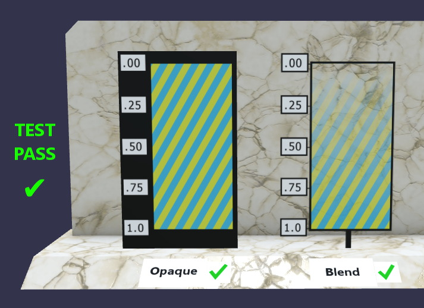
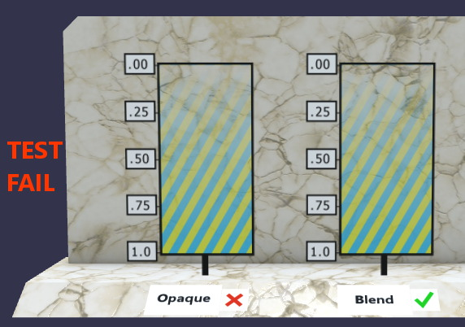

Technical documentation
Help another person understand the intended result, reproduce the test, verify the outcome, and maintain the example.
Two readers, one exhibit
The visitor needs to understand the phenomenon. The maintainer needs enough identity, procedure, and evidence to reproduce and reset it. A short explanation and a technical record can serve those purposes while agreeing about what the exhibit demonstrates.
Documentation earns its length by answering a reader's question. A list of every action you performed is less useful when it hides the tested claim and decisive evidence.
A published example
The Khronos AlphaBlendModeTest documentation shows an expected appearance and a recognizable failure. The comparison makes its claim inspectable.


Credit: Ed Mackey / Analytical Graphics, Inc., 2018, CC BY 4.0. Original test README. These are glTF sample images, not evidence of a repaired Unreal course exhibit.
Replace “fixed it” with evidence
Consider the weak note: “Fixed the texture.” It does not identify the asset, the observed problem, the change, or the verification.
An illustrative record can be much more useful:
| Field | What to record |
|---|---|
| Intended result | The label reads in the intended direction from the reference view. |
| Symptom | Record the observed reversal and the exact asset/component. |
| Hypothesis | A coordinate transformation may explain the reversal. |
| Test | Compare the same image with the relevant U-coordinate operation changed. |
| Change | Record the actual property, original value, and tested value. |
| Evidence | Use matching views of the observed states and the relevant editor field. |
| Verification | Check orientation, density/scale, the original viewing condition, and unaffected behavior. |
| Reset and limits | Explain how to restore the comparison and what has not been tested. |
This table describes a record structure. It does not claim that a particular asset was repaired or establish a compulsory submission format.
Write a procedure someone can use
Identify the correct starting asset and state. Give the action where it becomes necessary. State what the reader should see after a consequential step. Use exact UI labels when they prevent ambiguity, and name the software/importer context.
Google's procedure-writing guide is a useful reference for clear steps. A source citation should resolve a concrete uncertainty, such as what an input or import setting controls.
The handoff check
Can another person open the intended example, explain the comparison, repeat the verification, and reset it? Can they locate its source and dependencies? A useful record answers those questions without requiring the original author to stand beside it.
Use the exhibit-record template as a starting point, then remove irrelevant fields and add the details your example needs.